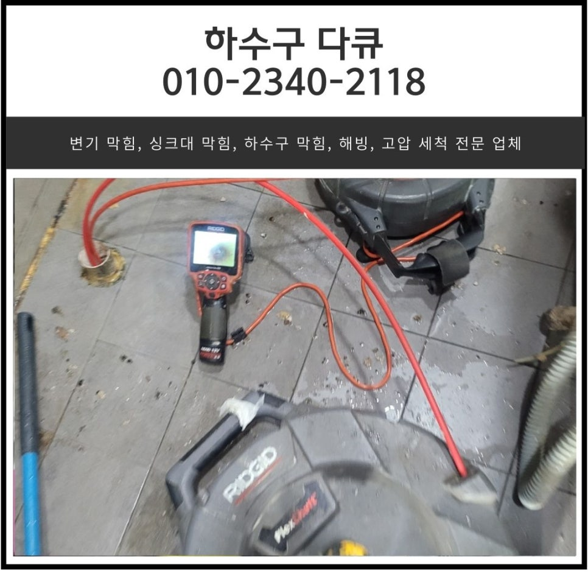
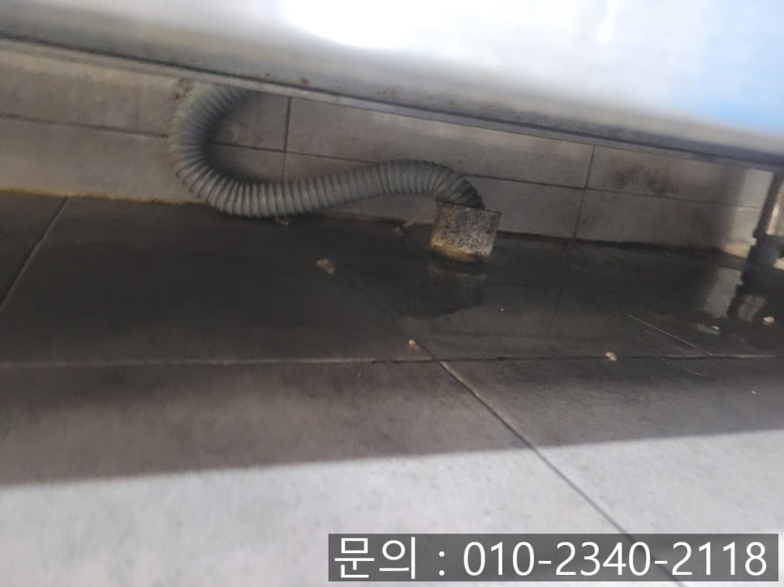
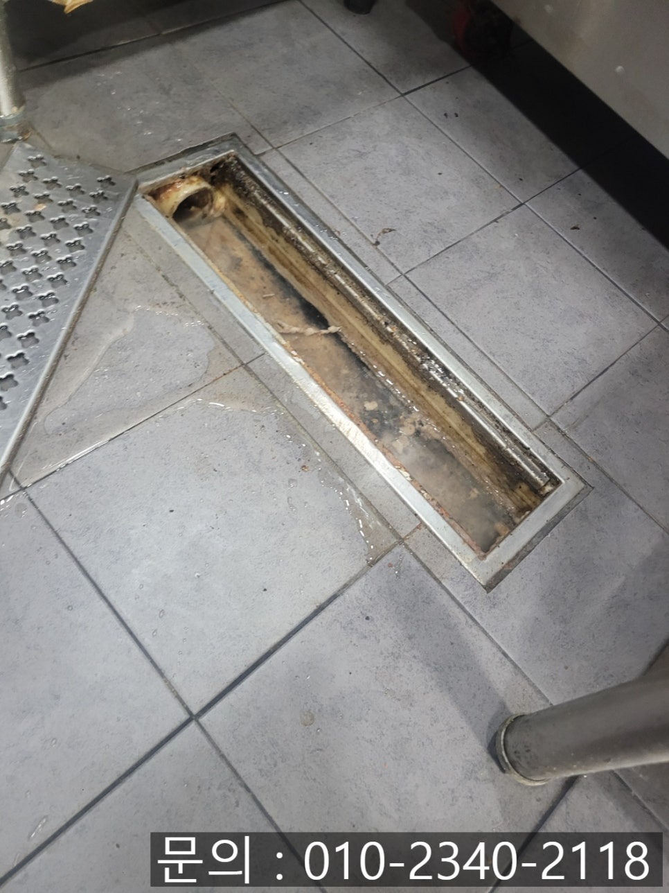
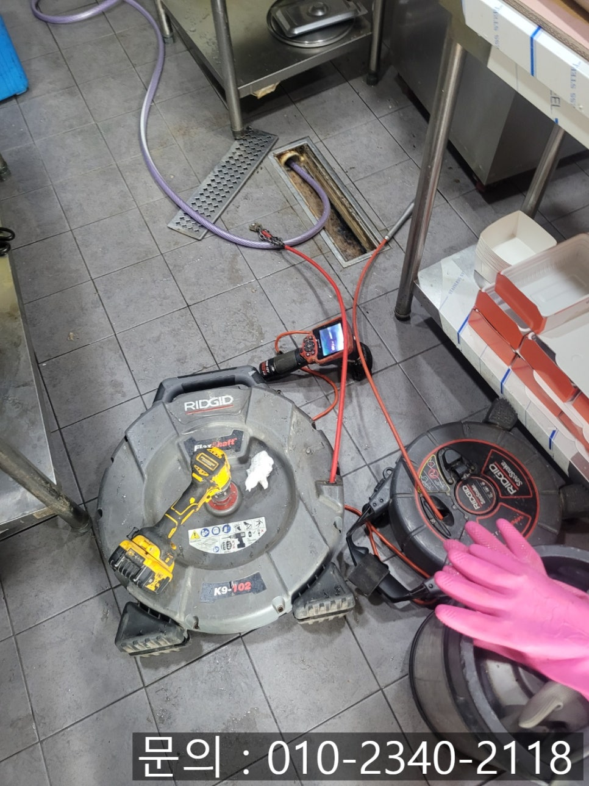
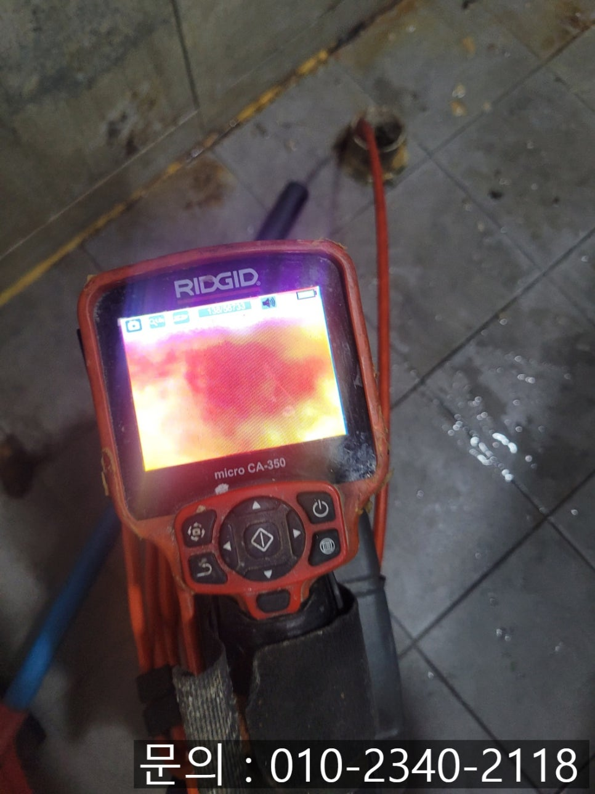
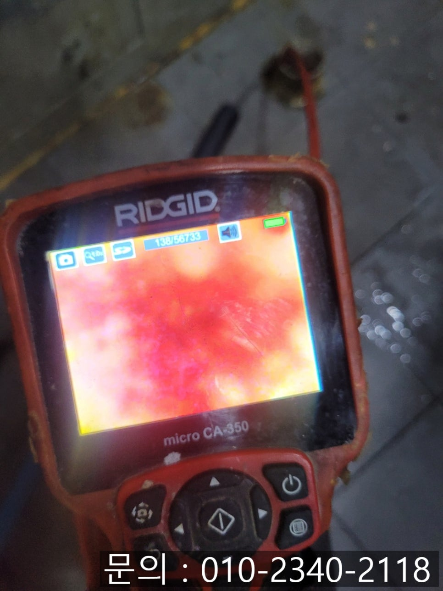
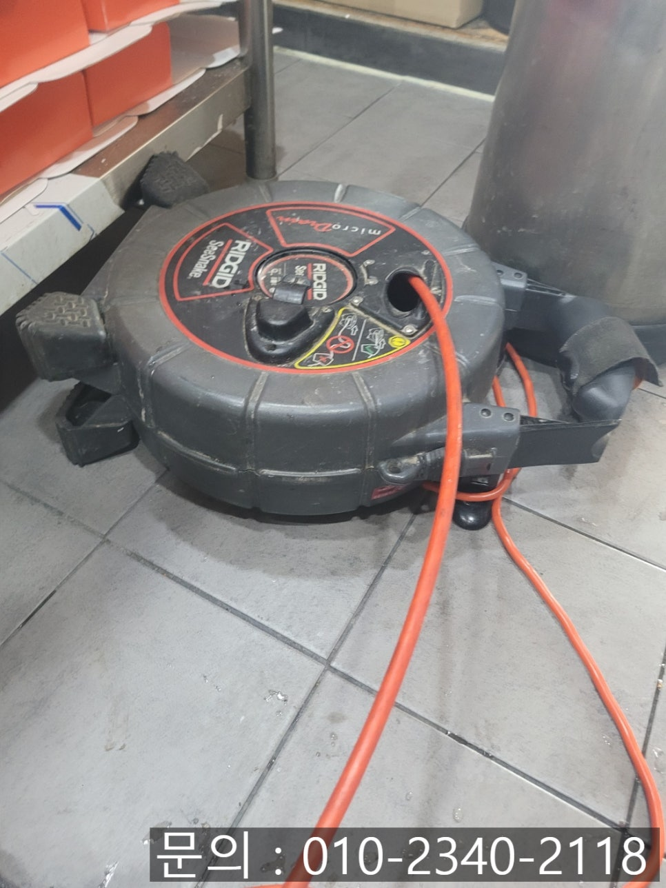

🏠 향남읍 주방 하수구 막힘 향남 식당 바닥 트랜치 배관 역류 해결
화성 향남 싱크대막힘 전문 시공 후기

📋 작업 개요
- 위치: 화성 향남, 향남, 화성
- 서비스 유형: 싱크대막힘, 하수구막힘, 배관막힘, 역류해결, 배관청소, 고압세척
- 작업 일시: 2025. 3. 8. 19:35
- 업체명: 하수구수사대 (010-5615-2118)
🔍 문제 상황
안녕하세요.
향남읍 주방 하수구 막힘, 향남 식당 바닥 트랜치 배관 역류 해결 업체 하수구 다큐입니다.
음식을 취급하는 식당의 경우 주방을 많이 사용하다 보니 향남읍 주방 하수구 막힘은 매우 흔한 문제입니다.
오늘은 향남 식당 바닥 트랜치 배관 역류 해결 문제를 하수구 다큐가 어떻게 해결했는지 자세히 설명해 드릴게요.
향남읍 주방 하수구 막힘 현상의 경우 음식을 준비하거나 치우는 과정에서 발생하게 되는 음식물 찌꺼기, 기름 등이 쌓이면서 일어납니다.
특히, 음식을 조리할 때 많이 사용하는 기름의 경우 시간이 흐르면서 차가운 공기와 만나 굳어지게 되는데요.
기름과 각종 음식물 찌꺼기들이 뭉쳐 배관 내부에 쌓이게 되면서 물의 흐름을 방해하게 됩니다.

🔎 원인 분석
💡 전문가 진단: 정밀 진단 장비를 사용하여 슬러지의 고착 여부를 판명하고 타격/세척 작업을 실시했습니다.
음식을 다루는 식당 주방 하수구 막힘이 발생한다면?
방문하신 손님들에게 음식을 제공할 수 없어 운영에 큰 차질이 생기다 보니 신속하게 원인을 파악하고 정확하게 해결해야 합니다.
오전 10시 즈음 향남읍 주방 하수구 막힘으로 연락을 받았습니다.
주방에서 점심 장사를 위해 한창 준비 중인데 사용한 물이 흘러가지 않고 역류하고 있다고 빨리 방문해달라고 의뢰하셨어요.
아무래도 주방에서 음식을 조리하거나 남은 음식들을 처리하는 과정에서 기름이나 음식물 찌꺼기들이 조금씩 흘러들어가 배관을 막아 문제가 발생한 것 같았습니다.
신속하게 방문해 현장을 먼저 점검해 보니 싱크대 아래로 주름 배관이 길게 늘어져있는 상태로 방치되어 있었습니다.
주름 배관이 길게 늘어져있을 경우 마지막에 흘러가는 물이 내려가지 못하고 배관에 멈춰있을 가능성이 높아 주름 배관의 길이를 알맞게 조절해 주시는 게 좋아요.

🔧 작업 과정
그뿐만 아니라 주방 바닥 트랜치 배관에서도 물이 빠져나가지 못하고 정체되어 있는 상태였어요.
꽤 오래전부터 통수가 제대로 안된 건지 기름 슬러지들이 쌓이고 있는 상태로 문제 해결이 시급해 보였습니다.
정확한 원인을 파악하기 위해 필요한 장비를 준비한 다음 내시경 카메라를 이용해 배관 내부를 확인해 보기로 했습니다.
예상했던 대로 배관 내부에는 기름 슬러지와 음식물 찌꺼기가 두껍게 쌓여 있어 물이 흘러갈 공간이 전혀 없는 상태였어요.
주방의 경우 기름을 많이 사용하는 튀김이나 국물 음식을 많이 하다 보니 흘려보낸 국물과 기름 성분이 배관 벽면에 쌓이게 되면서 돌처럼 굳어진 것이 주요 원인이었습니다.
일반적인 세척 방법으로는 해결이 어려운 상태로 하수구 전문 장비를 이용한 배관 청소가 필요하다고 판단되어 고객님께 작업 방법, 소요시간, 비용 등을 안내해 드리고 바로 작업에 착수했어요.
향남 식당 바닥 트랜치 배관 역류 해결을 위해 강한 회전력을 이용해 막힌 배관을 효과적으로 청소해 주는 플렉스 샤프트 장비를 사용하기로 했습니다.
플렉스 샤프트 장비는 360도로 회전하는 와이어 브러시를 통해 배관 내부에 붙어있는 기름 슬러지와 음식물 찌꺼기 등의 이물질을 긁어내면서 물길을 만들어주는 역할을 합니다.
노즐 끝에 달린 체인이 배관 내부에서 회전하면서 강한 마찰력을 이용해 기름때를 긁어내면서 돌처럼 굳어있는 이물질도 잘게 부숴주는 작업을 합니다.
한 번에 배관의 깊은 곳까지 작업을 하지 않고 일정 구간을 반복해서 청소하면서 조금씩 범위를 넓혀가며 작업을 진행했어요.
작업을 할 때는 항상 내시경 카메라를 같이 사용해 이물질이 제거되었는지 꼼꼼하게 체크해야 합니다.


✅ 작업 완료
한참 반복해서 작업을 진행하자 수도를 연결해 오랜 시간 물을 흘려보내도 막힘없이 원활하게 배수가 이루어지고 역류도 발생하지 않아 고객님께 최종 결과를 안내해 드렸어요.
말로만 설명해드리는 것이 아닌 내시경 카메라를 이용해 이물질이 제거된 배관을 직접 보여드리고 테스트도 같이 진행하며 아무런 문제가 없는 것까지 확인시켜드리고 작업을 마무리할 수 있었습니다.
경기도 화성시 향남읍 상신하길로328번길 26 5층 505호 5호




⚠️ 주방 싱크대 배관 막힘 예방 수칙
- ✅ 기름기가 묻은 식기나 프라이팬은 설거지 전 키친타올로 반드시 기름때를 닦아내세요.
- ✅ 주기적으로 싱크대 개수대에 뜨거운 물을 가득 받아 한 번에 내려 배관 내부 기름을 씻어내세요.
- ✅ 배수구 거름망을 미세한 필터로 사용하시고 음식물 찌꺼기가 틈으로 새어 들지 않게 관리하세요.
- ✅ 베이킹소다와 식초를 뜨거운 물과 함께 일주일에 한 번씩 부어주면 배관 살균과 막힘 예방에 좋습니다.
💡 핵심 정리
- 확실한 장비 작업(내시경 점검 및 샤프트 스케일링)으로 원인을 뿌리 뽑습니다.
- 작업 후 1년 이내에 동일한 부위 재발 시 100% 무상 A/S 서비스를 보장합니다.
- 서울 · 경기 · 인천 전 지역에 24시간 언제든 긴급 출동할 수 있도록 항시 대기 중입니다.
❓ 자주 묻는 질문 (FAQ)
🚨 화성 향남 싱크대막힘 문제로 고민이신가요?
정확한 원인 진단과 확실한 시공으로 재발 없는 해결을 약속드립니다.
24시간 긴급 출동 | 서울 · 경기 · 인천 전지역 | 1년 내 재발 시 무상 A/S